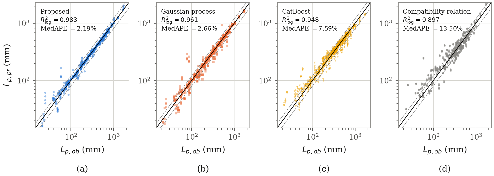
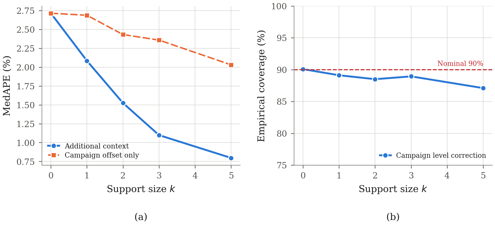

The plastic hinge length controls the plastic rotation and drift capacity assigned to reinforced concrete structural walls in concentrated plasticity models. However, the plastic hinge length listed in experimental databases is a derived quantity. Each testing program obtains the value from the measured plastic curvature and displacement through an adopted idealization. Moreover, specimens of one experimental campaign share design ranges and data reduction procedures. Consequently, random partitions of individual specimens can overstate the accuracy expected for a new campaign.
CAFM-PW couples an inverted compatibility relation with a pretrained tabular foundation model and calibrates prediction intervals with one conformity score per campaign. For 234 tests from 58 campaigns with complete campaigns withheld, the median absolute percentage error decreases from 13.50% for the compatibility relation alone to 2.19%, compared with 2.66% for the best performing of six optimized benchmark models. At 90% nominal coverage, the calibrated intervals attain an empirical coverage of 0.920 and are 2.4 times narrower than the intervals of the best performing benchmark model.
Mechanics-based reference value. A compatibility relation between plastic displacement, plastic curvature, and hinge length is inverted in closed form to provide a physically grounded reference value for each test.
Residual and direct formulations. A pretrained tabular foundation model predicts the residual with respect to the reference value in one formulation and the logarithm of the hinge length in a second formulation. The predictive quantiles of the two formulations are averaged, with no gradient update.
Campaign level calibration. Conformalized quantile regression uses one conformity score per experimental campaign excluded from model fitting.
Prediction updating. Appending a few tested walls from the target campaign to the context improves accuracy and sharpens intervals without changing any parameter.
Complete experimental campaigns are withheld from training, calibration, and testing, and every comparison is tested at the campaign level.
| Metric | CAFM-PW | Best benchmark model |
|---|---|---|
| Median absolute percentage error | 2.19% | 2.66% |
| Coefficient of determination | 0.990 | 0.981 |
| Logarithmic coefficient of determination | 0.983 | 0.961 |
| Predictions within 20% of the reported value | 95.3% | 87.7% |
| Empirical coverage at 90% nominal coverage | 0.920 | 0.832 |
| Normalized interval width at 90% nominal coverage | 0.180 | 0.438 |

Predicted against reported plastic hinge length on unseen campaigns.
Appending five tested walls from the target campaign to the context lowers the median error by 71% and the normalized interval width by 47%, with no parameter update.

Identification accuracy and empirical coverage for an increasing number of tested walls from the target campaign.